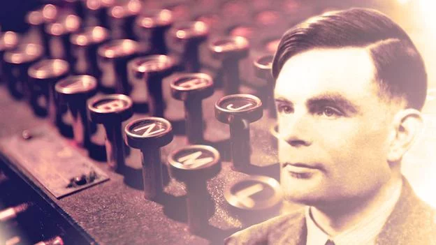

HOME
POST
VIDEOS
22 Dicas de como administrar o tempo!
1. Saia das quatro paredes:
Estar sempre no mesmo ambiente, ver sempre a mesma janela, sentar sempre na mesma cadeira — ou seja, cair na mesmice — atrapalha o nosso desenvolvimento profissional e intelectual, algo que consequentemente baixa nossa produtividade. Não há como administrar o tempo sentindo-se aprisionado! Quantas vezes precisamos de uma solução rápida para nossos clientes e nenhuma inspiração vem a nossa mente? Sair do seu local de trabalho e procurar um lugar mais inusitado ou até mesmo mais inspirador pode ajudar. Cada um sabe qual é o melhor lugar para se realizar tarefas. Uns gostam de bibliotecas, outros gostam de praças e restaurantes, cabe a você escolher qual ambiente manterá sua mente mais disposta e motivada.
2. Liste suas tarefas:
Post-its, caderno de anotações, notas do tablet ou celular, não importa a ferramenta: Listar tarefas nos ajuda a ter dimensão do que temos que fazer. É importante que a listagem seja feita assim que começamos nossas atividades. Ela deve ser a primeira ação, pois assim conseguimos determinar nossas prioridades, que outro passo muito importante. Ao listar nossos afazeres devemos relacionar as urgências e pendências, assim nascerão as prioridades. Aplicar essa dica significa dar organização ao nosso dia, e torna-la consequentemente mais dinâmica e proveitosa.
3. Planejamento:
Na vida profissional, social, intelectual e em todos os âmbitos, planejamento sempre será eficaz. Um dos segredos de como administrar o tempo é: antes de qualquer tarefa ser realizada ela deve ser planejada. Metaforicamente falando, sempre antes de colocar “a mão na massa”, vale rever a receita, se todos os ingredientes já estão em mãos, e tomar todas as devidas precauções para que tudo ocorra bem. Afinal nada mais incomodo do que ter que refazer uma tarefa certo? Então é importante otimizar e dar um “tiro” certeiro para que o projeto saia de acordo com o planejado.
4. Procure maneiras diferentes para realizar suas tarefas:
Nada deixa o profissional mais desmotivado do que agir como um robô, repetindo a mesmo serviço de maneira igual todos os dias. Claro que isso vai depender do seu seguimento mas, na maioria dos casos, sempre existe mais de um jeito de se fazer a mesma coisa. Inovar, testar novos métodos, deixa nosso trabalho mais produtivo.
5. Evite o uso exagerado de redes sociais:
Atualmente não é fácil largar as redes sociais, principalmente que em muitas vezes usamos elas para aspectos profissionais, o que é totalmente saudável e válido. Não podemos negligenciar essas ferramentas nem o benefício que elas nos trazem. Porém podemos maneirar o uso delas. Tudo em excesso faz mal, e com as redes sociais não é diferente. Quantas vezes nos pegamos em um momento de produtividade e de repente, somos atraídos por uma conversa em um grupo do whatsapp ou outro meio? Isso pode ser prejudicial. Tudo tem seu tempo. Enquanto estamos realizando alguma tarefa é importante dar total atenção e dedicação a ela, como administrar o tempo, por exemplo: tenha foco nessa tarefa também!
6. Mantenha uma boa alimentação:
Quantos profissionais pecam nesse quesito? Quando não nos alimentamos bem, nossa produção e rendimento cai. O ideal é comer de três em três horas. Faça pausas e se alimente com frutas e refeições saudáveis. Você certamente vai notar a diferença quando aderir a uma boa alimentação.
7. Invista em lazer:
Não adiantar se afundar em tarefas e não ter tempo para o lazer. Isso fará que com que o seu trabalho se torne enfadonho e monótono. O resultado será menor rendimento e qualidade de serviço. Faça pausas, leia livros, veja filmes, palestras, enfim, cada um sabe a melhor maneira de se entreter. O entretenimento deixa nossa mente ativa e constantemente produtiva.
Atingir nossas metas exige uma combinação de estratégias e saber como administrar o tempo. Escolha as que melhor se adequam ao seu seguimento. Inove sua produção e deixe seu dia mais produtivo.
Um dica muito comum de empresários é saber como usar sites e a internet para te ajudar a administrar o tempo e o dinheiro. Um grande exemplo foram os sócios do restaurante Point do Macarrão que economizaram muito dinheiro (e tempo) usando um site de concorrência criativa para criar a identidade visual de seus negócio.
Assista a esta história de sucesso no empreendedorismo:
8. Use a tecnologia:
Os avanços tecnológicos estão aí para ajudar na vida das pessoas, seja no profissional ou não. Muitos empresários utilizam smartphones e tablets para adiantar algumas tarefas do dia, além de programas como o skype para se comunicar, economizando tempo e dinheiro.
9. Flexibilidade de horário:
Alguns empresários creem que horários mais flexíveis ajudam na produtividade, tanto deles quanto de seus funcionários. O foco deve ser sempre o resultado e como administrar o tempo da melhor maneira possível. Mas também é preciso pulso firme e disciplina para não deixar a flexibilidade gerar folga e desleixo de ambas as partes.
10. Reuniões em pé:
como administrar o tempo Para evitar perca de tempo, reuniões devem ser rápidas e direto ao ponto. Alguns empresários dizem que suas reuniões duram cerca de 15 minutos, pois não se estendem muito. Além disso, as fazem em pé, para que ninguém se acomode.
11. Não programe todo seu dia:
Programando apenas 70% do dia, é possível resolver urgências que não estão na agenda. Também saiba especificar o que é importante e urgente, tendo em mente que são tarefas a ser resolvidas com rapidez.
12. Mantenha o horário de algumas tarefas:
Separe tarefas rotineiras em horários pré-estabelecidos e evite interrupções. Não deixe para resolver estas questões apenas quando chegar na empresa, uma vez que estas tarefas normalmente costumam ser feitas no fim ou começo do expediente.
como administrar o tempo
13. Evite distrações:
Não é todo mundo que consegue se concentrar em algo enquanto as agitações no ambiente tende a lhe atrapalhar. Para melhorar o foco e a produtividade, alguns profissionais dão duas dicas básicas, mas que podem fazer toda diferença: dividir em blocos, com 25 minutos para o trabalho e 5 minutos para descansar; colocar os fones de ouvidos e ouvir música em um volume alto, focando-se apenas no trabalho.
14. Cuidado com os E-mails:
E-mails deveriam ser de grande ajuda, mas hoje em dia, eles podem roubar boa parte do seu tempo. O ideal é checar apenas 3 ou 4 vezes por dia e evitar a perca de produtividade.
-Emails e internet quando usados adequadamente são de grande ajuda para empresários. É o caso de quem faz, por exemplo, lopgotipos por meio de um site de concorrência criativa, com mais agilidade e muito mais ideais e ótimos preços. Confira o resultado deste projeto de criação de logotipos para a loja de joias Brilhe, que recebeu 118 sugestões de logos enviadas por 35 de nossos designers.como administrar o tempo.
Grande parte dos profissionais tem algum problema de concentração, procrastinação e uma óbvia “falta de tempo”. Abaixo daremos algumas dicas de como produzir mais, de maneira eficiente e em menos tempo. As dicas foram extraídas do livro A Tríade do Tempo, do Christian Barbosa.
15. Qual o grande segredo de como administrar o tempo?
Divida suas atividades ou rotinas em três pontos específicos:
-Urgente: é alguma tarefa ou planejamento que tem um tempo muito curto ou já esgotado. O urgente é algo que já era para ter sido feito. Não pode ser deixado para depois. As urgências não podem ser previstas, acontecem espontaneamente e de última hora.
-Importante: São todas as atividades que você faz e que são significativas na sua vida. É o caminho da certeza. Existe um tempo para ser feito. Sempre tem uma data estipulada e pode ser feito com calma.
-Circunstancial: são todas as tarefas desnecessárias, que não trazem resultados, apenas frustrações.
Trabalhe constantemente sua agenda para que uma tarefa importante não vire urgente e sempre evite as circunstanciais. Dessa forma, você terá uma vida pessoal e profissional mais equilibrada.
16. Como sair da urgência?
Toda atividade urgente deve responder a quatro perguntas:
Por que essa atividade foi urgente?
Como eu poderia ter prevenido?
Que atividades posso planejar para evitar essa urgência?
É possível delegar?
Se você conseguir responder essas perguntas, certamente achará uma solução para que ela não tome toda sua rotina de trabalho.
como administrar o tempo
17. Afinal de contas, como administrar o tempo?
Descarregar (reduzir as ansiedades e urgências)
Tirar tudo da memória e colocar em alguma lista (tarefas que ficam somente na memória ou são esquecidas ou perdem sua essência.)
Não passe mais do que 24h nos dois processos acima.
Planejar
Antecipar (o importante não pode virar urgente. Se a tarefa for muito grande, divida-a em partes).
18. E como realizar uma tarefa importante de forma eficiente e eficaz?
Em tarefas que exigem uma grande concentração, use o “shut down”, que é realmente se desligar de tudo e se focar naquilo que está executando. Desligar o celular, tirar a internet do seu computador e evitar conversas. Esse processo de “desligamento do mundo” não pode durar mais que 3h senão você acaba não produzindo mais o esperado. E ao terminar a tarefa, um descanso de 15 minutos é ideal para refrescar a mente.
19. O problema da procrastinação:
Outro grande problema na gestão do tempo é o adiamento das tarefas. Sempre temos uma notícia para ler, um vídeo para assistir ou uma rede social para acompanhar. Sem falar no famoso cafezinho e bate papo nos corredores. Enfim, é de grande importância que evitemos esse tipo de ações quando temos tarefas a cumprir. Abaixo algumas dicas para evitar a procrastinação:
-ISe a tarefa for grande, divida.
-Utilize o shutdown
-Delegue ou cancele
-Transforme em compromisso (marque datas)
-Utilize recompensas (dinheiro, comida etc)
-Imagine o objetivo por trás da tarefa.
Enfim, essas foram algumas dicas para melhorar sua gestão do tempo. Para maiores detalhes sobre a metodologia, aconselho que leiam o livro completo: A tríade do Tempo.
01 - eBook-Dicas Fantásticas de Marketing para Micro e Pequenos Negócios-CTA-600x200px
Muitas vezes não percebemos que pequenas atitudes na nossa rotina de trabalho podem nos ajudar a ter um desempenho consideravelmente melhor e como administrar o tempo.
Foi isso que Alan Turing enxergou em sua própria rotina. Ele foi um matemático, lógico, criptoanalista e também um dos primeiros cientistas da computação da história, além de estar entre as figuras mais influentes na modelagem de dados.
como administrar o tempo:
Os feitos de Turing tiveram um papel fundamental na quebra do enigma das máquinas nazistas de criptografia e no desenvolvimento do famoso Teste de Turing, etapa chave no desenvolvimento de inteligência artificial.
Para dar conta de tudo isso, ele tinha alguns truques em sua rotina para aumentar a produtividade. Confira-os abaixo.
20- Divida as tarefas maiores em pequenas tarefas:
O segredo de como administrar o tempo de Turing se baseava em sua incrível habilidade de quebrar as grandes tarefas em pequenas partes para que pudesse resolver seus problemas passo a passo.
Em sua equipe, essa ideia de quebrar os problemas maiores em pequenas tarefas era uma regra geral e Turing sabia da importância disso mais do que ninguém.

como administrar o tempo
21- Uma mesa desarrumada pode trazer criatividade:
Turing acreditava que uma mesa bagunçada era de grande ajuda para uma mente criativa. Segundo ele, a desordem é frequentemente associada com o gênio artístico, criativo e científico.
Existem argumentos contra e a favor dessa afirmação, mas a hipótese é de que isso se trata mais de um traço de personalidade. Então, se você é uma pessoa que pensa melhor com a mesa bagunçada, isso será melhor para a sua produtividade.
22- Exercite-se para esvaziar a mente:
Turing era um corredor ávido e gostava de se exercitar. Certa vez, ele chegou em quinto lugar na maratona classificatória para os Jogos Olímpicos de 1949. O cientista costumava contar que tinha um trabalho tão estressante que a única maneira de tirá-lo da cabeça era através de exercícios físicos.
Turing, obviamente, não era o único a usar os exercícios físicos para esvaziar a mente. Logo, lembre-se de que se exercitar um pouco pode ser uma maneira de ajudar você a pensar melhor.
Essas são apenas algumas formas de ajudar a mente a trabalhar melhor, entretanto, independente dos métodos que você adotar, o mais importante é não perder o foco e a força de vontade.